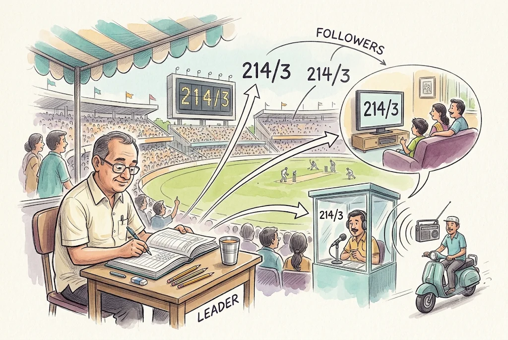
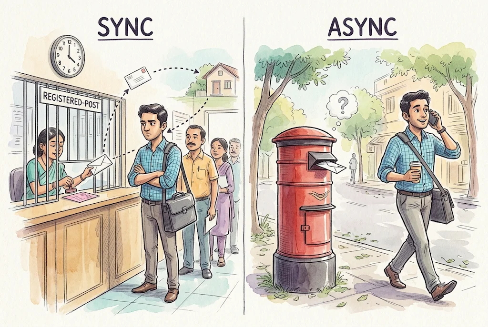
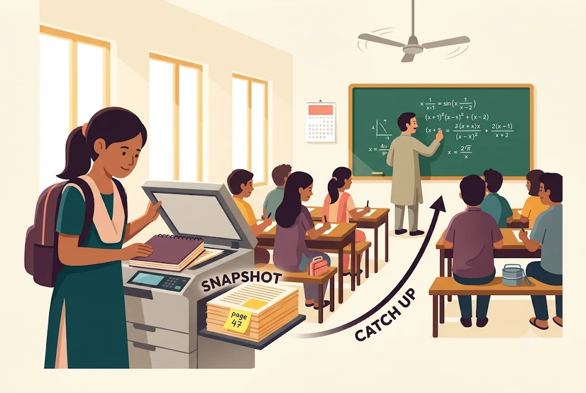
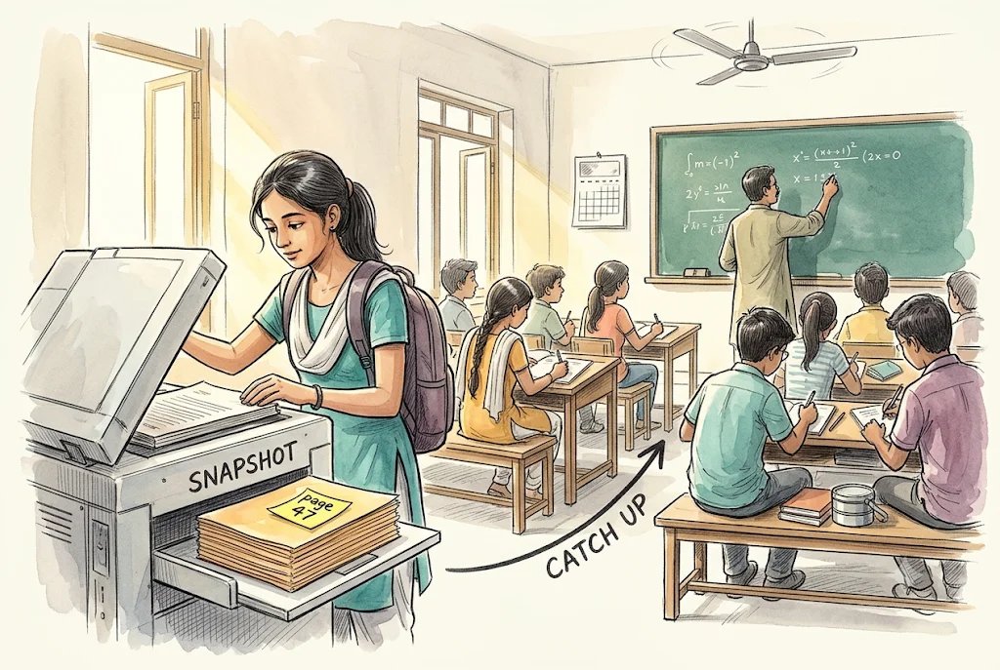
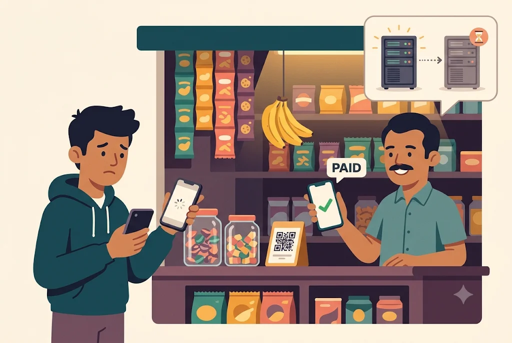
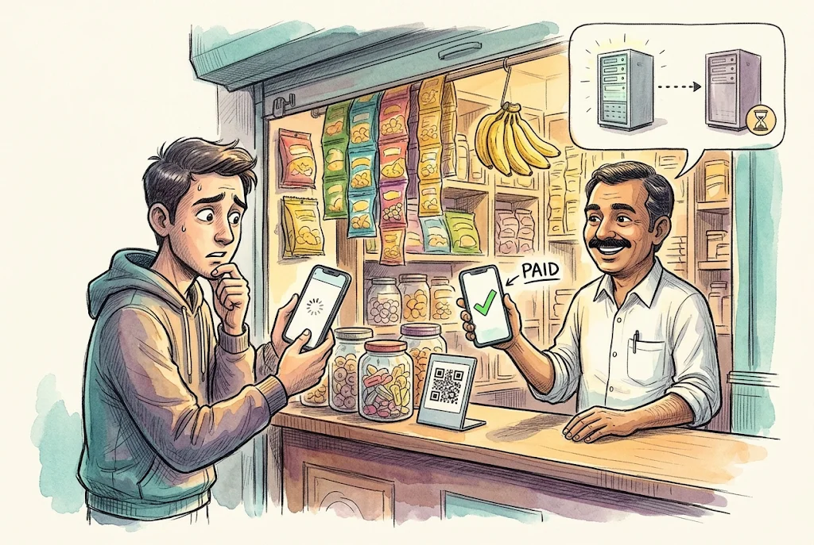
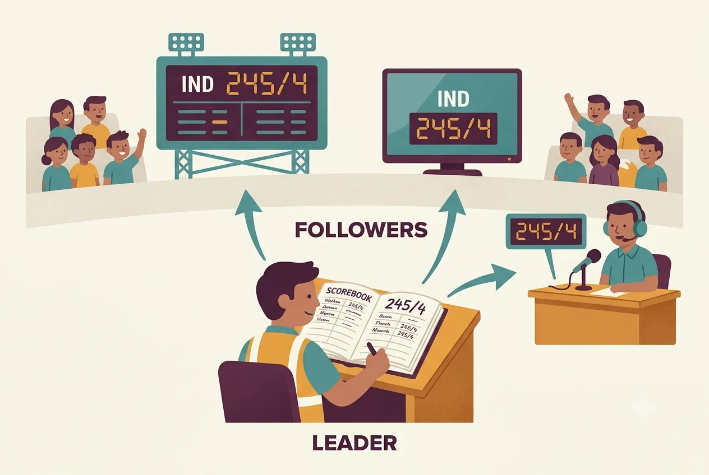

Illustration pilot · DDIA ch05
Each real "Picture it" box from the chapter, with the same scene in two styles. Detailed prompts in PILOT_PROMPTS.md. Toggle ☀/☾ bottom-right to check both themes.
Leaders and Followers
The official scorer at a cricket match is the leader: only they write runs into the scorebook. The stadium scoreboard, TV graphics and the radio commentator are followers: they copy the scorer's entries, in order, and fans read from whichever is nearest. If a fan shouts "add 4 runs!" at the scoreboard operator, nothing happens; only the scorer can change the score. Where it breaks: in cricket the copies are a few seconds behind and nobody minds; in a database, that delay is exactly what plates 11–15 worry about.


Synchronous Versus Asynchronous Replication
Synchronous is sending a document by registered post with acknowledgement: you don't tell your boss "sent" until the pink AD card comes back. If the post office is shut, you are stuck. Asynchronous is dropping it in a post box: you tell your boss "sent" right away, and usually it arrives, but if the van crashes the letter is gone even though you said "sent". Semi-synchronous: one copy by registered post, the rest by ordinary post. Where it breaks: a real AD card can take days; a database sync ack takes milliseconds, unless the follower is down, in which case it takes forever.


Setting Up New Followers
You join a coaching class in week 6. You photocopy a friend's notebook as it was on Friday evening and note "Friday = page 47" (the snapshot and its log position). Then you ask: "what was taught after page 47?" and copy that too (the backlog). Once you've caught up, you take notes live in class like everyone else. Where it breaks: if your friend kept writing while you were photocopying, some pages would be from Friday and some from Monday; a database snapshot is designed to be one consistent instant.


Reading Your Own Writes
You pay a shopkeeper by UPI, your bank app says "₹200 paid", you refresh the passbook screen and the payment isn't there. Panic. The money is fine; the screen just read from a server that hadn't caught up. Read-your-writes says: whatever you did, you must see. The shopkeeper seeing it a few seconds later is acceptable. Where it breaks: a bank usually has stronger guarantees than this; the analogy is about the feeling, not how banks are built.


Short prompt vs detailed prompt (Style A)
